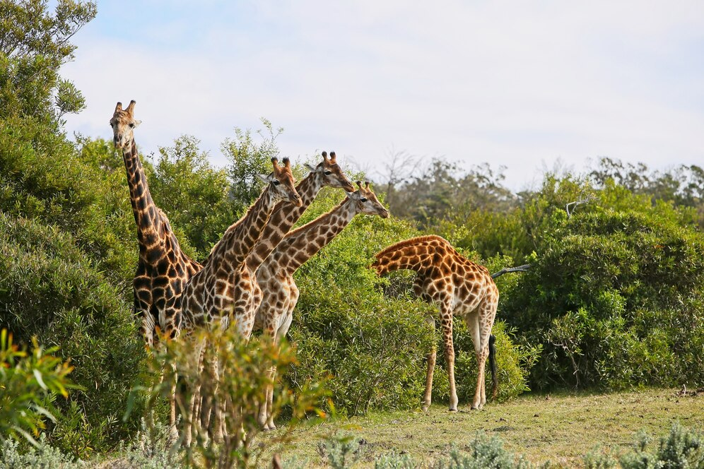

Biodiversity is the variety of life on Earth encompasses the diversity of species, genes and ecosystems. It is the foundation of ecosystem
services that sustain human life including clean air, water and fertile soils. The intricate web of life from the smallest microorganisms
to the largest mammals contributes to the stability and resilience of ecosystems. This diversity ensures the availability of resources and
services that are essential for human survival and well-being.
Biodiversity is not just about the number of species but also about the complex interactions between them. These interactions create a
balance that allows ecosystems to function properly. For example, pollinators such as bees and butterflies play a critical role in the
reproduction of flowering plants which in turn provide food and habitat for other species. Similarly, predators help control the population
of herbivores preventing overgrazing and promoting plant diversity.
The loss of biodiversity can disrupt these interactions and lead to the collapse of ecosystems. This can have far-reaching consequences
for human societies including reduced food security, increased vulnerability to natural disasters and diminished quality of life.
Therefore, it is crucial to understand and appreciate the value of biodiversity and the need for its conservation.
Threats to Biodiversity

Despite its importance biodiversity is facing unprecedented threats from human activities. Habitat destruction, climate change,
pollution, overexploitation and invasive species are some of the major drivers of biodiversity loss. Habitat destruction primarily
due to deforestation, urbanization and agricultural expansion is the leading cause of species extinction. Forests, wetlands and
coral reefs which are rich in biodiversity are being cleared or degraded at an alarming rate resulting in the loss of countless
species and the disruption of ecosystem services.
Climate change driven by the accumulation of greenhouse gases in the atmosphere is altering temperature and precipitation patterns
affecting the distribution and behavior of species. Many species are unable to adapt quickly enough to these changes leading to population
declines and extinctions. For example, polar bears are losing their sea ice habitat while coral reefs are experiencing bleaching events due
to rising sea temperatures.
Pollution from industrial activities, agriculture and urbanization is also taking a heavy toll on biodiversity. Pesticides, plastics,
and other pollutants contaminate soil, water and air harming wildlife and disrupting ecosystems. Overexploitation of natural resources
such as overfishing and illegal wildlife trade is depleting populations of species and driving them towards extinction. Invasive species
introduced intentionally or accidentally by humans can outcompete native species for resources, spread diseases and alter ecosystems.
For example, the introduction of the brown tree snake to Guam has led to the extinction of several bird species on the island.
Conservation Efforts and Their Impact
To address the threats to biodiversity conservation efforts are being implemented at local, national and global levels. Protected areas
such as national parks and wildlife reserves are established to safeguard critical habitats and species. These areas provide a refuge for
wildlife and help maintain ecological processes. Community-based conservation initiatives involve local communities in the management and
protection of natural resources ensuring that conservation efforts are sustainable and socially inclusive. Restoration projects aim to
rehabilitate degraded ecosystems and reintroduce native species. For example, reforestation efforts can restore habitats for wildlife,
sequester carbon and enhance ecosystem services. Similarly, the restoration of wetlands can improve water quality, reduce flooding and
support biodiversity.
International agreements and policies such as the Convention on Biological Diversity (CBD) and the United Nations Sustainable Development
Goals (SDGs) provide a framework for coordinated action on biodiversity conservation. These agreements set targets and promote collaboration
among countries to address global environmental challenges. Innovative approaches such as conservation technology and citizen science
are also being used to enhance biodiversity conservation. Remote sensing and Geographic Information Systems (GIS) enable the monitoring of
ecosystems and species in real-time while mobile applications and online platforms engage the public in conservation efforts.
Education and awareness campaigns play a crucial role in promoting biodiversity conservation. By raising awareness about the importance
of biodiversity and the threats it faces. These campaigns can inspire individuals and communities to take action. For example, reducing
the use of single-use plastics, supporting sustainable products and participating in conservation activities can make a significant difference.
Therefore biodiversity is vital for the health and well-being of our planet and its inhabitants. The loss of biodiversity poses serious risks to
ecosystems and human societies. However, through concerted conservation efforts we can protect and restore biodiversity, ensuring a sustainable
future for generations to come. It is our collective responsibility to safeguard the natural world and the invaluable services it provides.